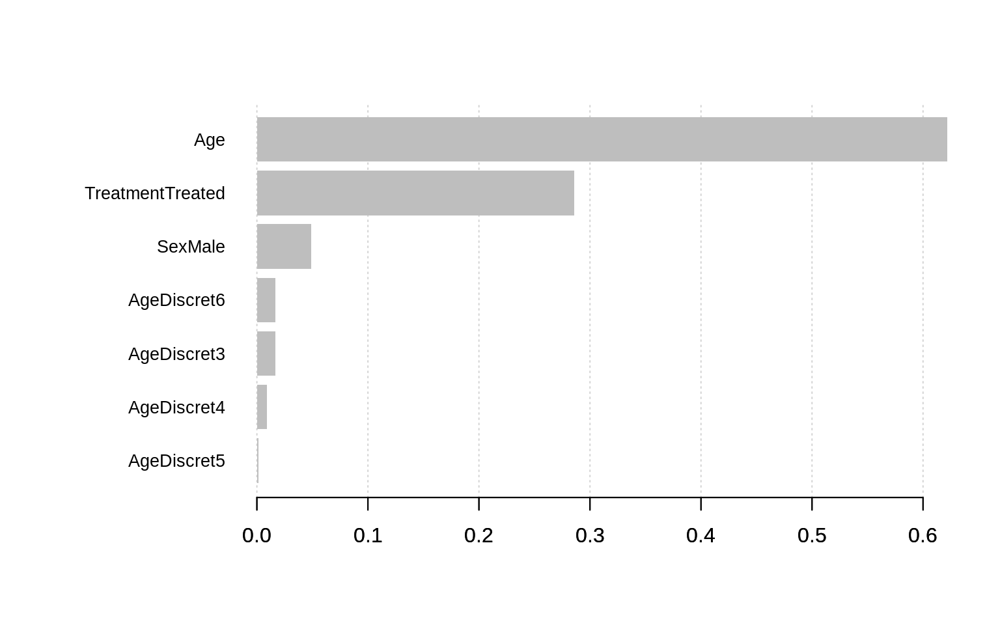

../../vignettes/discoverYourData.Rmd
discoverYourData.RmdThe purpose of this vignette is to show you how to use Xgboost to discover and understand your own dataset better.
This vignette is not about predicting anything (see Xgboost presentation). We will explain how to use Xgboost to highlight the link between the features of your data and the outcome.
Package loading:
VCD package is used for one of its embedded dataset only.
Xgboost manages only numeric vectors.
What to do when you have categorical data?
A categorical variable has a fixed number of different values. For instance, if a variable called Colour can have only one of these three values, red, blue or green, then Colour is a categorical variable.
In R, a categorical variable is called
factor.Type
?factorin the console for more information.
To answer the question above we will convert categorical variables to numeric one.
In this Vignette we will see how to transform a dense data.frame (dense = few zeroes in the matrix) with categorical variables to a very sparse matrix (sparse = lots of zero in the matrix) of numeric features.
The method we are going to see is usually called one-hot encoding.
The first step is to load Arthritis dataset in memory and wrap it with data.table package.
data.tableis 100% compliant with Rdata.framebut its syntax is more consistent and its performance for large dataset is best in class (dplyrfrom R andPandasfrom Python included). Some parts of Xgboost R package usedata.table.
The first thing we want to do is to have a look to the first few lines of the data.table:
## ID Treatment Sex Age Improved
## 1: 57 Treated Male 27 Some
## 2: 46 Treated Male 29 None
## 3: 77 Treated Male 30 None
## 4: 17 Treated Male 32 Marked
## 5: 36 Treated Male 46 Marked
## 6: 23 Treated Male 58 MarkedNow we will check the format of each column.
## Classes 'data.table' and 'data.frame': 84 obs. of 5 variables:
## $ ID : int 57 46 77 17 36 23 75 39 33 55 ...
## $ Treatment: Factor w/ 2 levels "Placebo","Treated": 2 2 2 2 2 2 2 2 2 2 ...
## $ Sex : Factor w/ 2 levels "Female","Male": 2 2 2 2 2 2 2 2 2 2 ...
## $ Age : int 27 29 30 32 46 58 59 59 63 63 ...
## $ Improved : Ord.factor w/ 3 levels "None"<"Some"<..: 2 1 1 3 3 3 1 3 1 1 ...
## - attr(*, ".internal.selfref")=<externalptr>2 columns have factor type, one has ordinal type.
ordinalvariable :
- can take a limited number of values (like
factor) ;- these values are ordered (unlike
factor). Here these ordered values are:Marked > Some > None
We will add some new categorical features to see if it helps.
For the first feature we create groups of age by rounding the real age.
Note that we transform it to factor so the algorithm treat these age groups as independent values.
Therefore, 20 is not closer to 30 than 60. To make it short, the distance between ages is lost in this transformation.
## ID Treatment Sex Age Improved AgeDiscret
## 1: 57 Treated Male 27 Some 3
## 2: 46 Treated Male 29 None 3
## 3: 77 Treated Male 30 None 3
## 4: 17 Treated Male 32 Marked 3
## 5: 36 Treated Male 46 Marked 5
## 6: 23 Treated Male 58 Marked 6Following is an even stronger simplification of the real age with an arbitrary split at 30 years old. We choose this value based on nothing. We will see later if simplifying the information based on arbitrary values is a good strategy (you may already have an idea of how well it will work…).
## ID Treatment Sex Age Improved AgeDiscret AgeCat
## 1: 57 Treated Male 27 Some 3 Young
## 2: 46 Treated Male 29 None 3 Young
## 3: 77 Treated Male 30 None 3 Young
## 4: 17 Treated Male 32 Marked 3 Old
## 5: 36 Treated Male 46 Marked 5 Old
## 6: 23 Treated Male 58 Marked 6 OldNext step, we will transform the categorical data to dummy variables. Several encoding methods exist, e.g., one-hot encoding is a common approach. We will use the dummy contrast coding which is popular because it produces “full rank” encoding (also see this blog post by Max Kuhn).
The purpose is to transform each value of each categorical feature into a binary feature {0, 1}.
For example, the column Treatment will be replaced by two columns, TreatmentPlacebo, and TreatmentTreated. Each of them will be binary. Therefore, an observation which has the value Placebo in column Treatment before the transformation will have after the transformation the value 1 in the new column TreatmentPlacebo and the value 0 in the new column TreatmentTreated. The column TreatmentPlacebo will disappear during the contrast encoding, as it would be absorbed into a common constant intercept column.
Column Improved is excluded because it will be our label column, the one we want to predict.
## 6 x 9 sparse Matrix of class "dgCMatrix"
## TreatmentTreated SexMale Age AgeDiscret3 AgeDiscret4 AgeDiscret5 AgeDiscret6
## 1 1 1 27 1 . . .
## 2 1 1 29 1 . . .
## 3 1 1 30 1 . . .
## 4 1 1 32 1 . . .
## 5 1 1 46 . . 1 .
## 6 1 1 58 . . . 1
## AgeDiscret7 AgeCatYoung
## 1 . 1
## 2 . 1
## 3 . 1
## 4 . .
## 5 . .
## 6 . .Formula
Improved ~ .used above means transform all categorical features but columnImprovedto binary values. The-1column selection removes the intercept column which is full of1(this column is generated by the conversion). For more information, you can type?sparse.model.matrixin the console.
Create the output numeric vector (not as a sparse Matrix):
Y vector to 0;Y to 1 for rows where Improved == Marked is TRUE ;Y vector.The code below is very usual. For more information, you can look at the documentation of xgboost function (or at the vignette Xgboost presentation).
bst <- xgboost(data = sparse_matrix, label = output_vector, max_depth = 4,
eta = 1, nthread = 2, nrounds = 10,objective = "binary:logistic")## [1] train-error:0.202381
## [2] train-error:0.166667
## [3] train-error:0.166667
## [4] train-error:0.166667
## [5] train-error:0.154762
## [6] train-error:0.154762
## [7] train-error:0.154762
## [8] train-error:0.166667
## [9] train-error:0.166667
## [10] train-error:0.166667You can see some train-error: 0.XXXXX lines followed by a number. It decreases. Each line shows how well the model explains your data. Lower is better.
A model which fits too well may overfit (meaning it copy/paste too much the past, and won’t be that good to predict the future).
Here you can see the numbers decrease until line 7 and then increase.
It probably means we are overfitting. To fix that I should reduce the number of rounds to
nrounds = 4. I will let things like that because I don’t really care for the purpose of this example :-)
Remember, each binary column corresponds to a single value of one of categorical features.
## Feature Gain Cover Frequency
## 1: Age 0.622031801 0.67251700 0.67241379
## 2: TreatmentTreated 0.285750512 0.11916649 0.10344828
## 3: SexMale 0.048744021 0.04522027 0.08620690
## 4: AgeDiscret6 0.016604635 0.04784639 0.05172414
## 5: AgeDiscret3 0.016373781 0.08028950 0.05172414
## 6: AgeDiscret4 0.009270557 0.02858800 0.01724138The column
Gainprovide the information we are looking for.As you can see, features are classified by
Gain.
Gain is the improvement in accuracy brought by a feature to the branches it is on. The idea is that before adding a new split on a feature X to the branch there was some wrongly classified elements, after adding the split on this feature, there are two new branches, and each of these branch is more accurate (one branch saying if your observation is on this branch then it should be classified as 1, and the other branch saying the exact opposite).
Cover measures the relative quantity of observations concerned by a feature.
Frequency is a simpler way to measure the Gain. It just counts the number of times a feature is used in all generated trees. You should not use it (unless you know why you want to use it).
We can go deeper in the analysis of the model. In the data.table above, we have discovered which features counts to predict if the illness will go or not. But we don’t yet know the role of these features. For instance, one of the question we may want to answer would be: does receiving a placebo treatment helps to recover from the illness?
One simple solution is to count the co-occurrences of a feature and a class of the classification.
For that purpose we will execute the same function as above but using two more parameters, data and label.
importanceRaw <- xgb.importance(feature_names = colnames(sparse_matrix), model = bst, data = sparse_matrix, label = output_vector)## Warning in xgb.importance(feature_names = colnames(sparse_matrix), model =
## bst, : xgb.importance: parameters 'data', 'label' and 'target' are deprecated# Cleaning for better display
importanceClean <- importanceRaw[,`:=`(Cover=NULL, Frequency=NULL)]
head(importanceClean)## Feature Gain
## 1: Age 0.622031801
## 2: TreatmentTreated 0.285750512
## 3: SexMale 0.048744021
## 4: AgeDiscret6 0.016604635
## 5: AgeDiscret3 0.016373781
## 6: AgeDiscret4 0.009270557In the table above we have removed two not needed columns and select only the first lines.
First thing you notice is the new column Split. It is the split applied to the feature on a branch of one of the tree. Each split is present, therefore a feature can appear several times in this table. Here we can see the feature Age is used several times with different splits.
How the split is applied to count the co-occurrences? It is always <. For instance, in the second line, we measure the number of persons under 61.5 years with the illness gone after the treatment.
The two other new columns are RealCover and RealCover %. In the first column it measures the number of observations in the dataset where the split is respected and the label marked as 1. The second column is the percentage of the whole population that RealCover represents.
Therefore, according to our findings, getting a placebo doesn’t seem to help but being younger than 61 years may help (seems logic).
You may wonder how to interpret the
< 1.00001on the first line. Basically, in a sparseMatrix, there is no0, therefore, looking for one hot-encoded categorical observations validating the rule< 1.00001is like just looking for1for this feature.
All these things are nice, but it would be even better to plot the results.

Feature have automatically been divided in 2 clusters: the interesting features… and the others.
Depending of the dataset and the learning parameters you may have more than two clusters. Default value is to limit them to
10, but you can increase this limit. Look at the function documentation for more information.
According to the plot above, the most important features in this dataset to predict if the treatment will work are :
Let’s check some Chi2 between each of these features and the label.
Higher Chi2 means better correlation.
##
## Pearson's Chi-squared test
##
## data: df$Age and output_vector
## X-squared = 35.475, df = 35, p-value = 0.4458Pearson correlation between Age and illness disappearing is 35.48.
##
## Pearson's Chi-squared test
##
## data: df$AgeDiscret and output_vector
## X-squared = 8.2554, df = 5, p-value = 0.1427Our first simplification of Age gives a Pearson correlation is 8.26.
##
## Pearson's Chi-squared test with Yates' continuity correction
##
## data: df$AgeCat and output_vector
## X-squared = 2.3571, df = 1, p-value = 0.1247The perfectly random split I did between young and old at 30 years old have a low correlation of 2.36. It’s a result we may expect as may be in my mind > 30 years is being old (I am 32 and starting feeling old, this may explain that), but for the illness we are studying, the age to be vulnerable is not the same.
Morality: don’t let your gut lower the quality of your model.
In data science expression, there is the word science :-)
As you can see, in general destroying information by simplifying it won’t improve your model. Chi2 just demonstrates that.
But in more complex cases, creating a new feature based on existing one which makes link with the outcome more obvious may help the algorithm and improve the model.
The case studied here is not enough complex to show that. Check Kaggle website for some challenging datasets. However it’s almost always worse when you add some arbitrary rules.
Moreover, you can notice that even if we have added some not useful new features highly correlated with other features, the boosting tree algorithm have been able to choose the best one, which in this case is the Age.
Linear model may not be that smart in this scenario.
As you may know, Random Forests™ algorithm is cousin with boosting and both are part of the ensemble learning family.
Both trains several decision trees for one dataset. The main difference is that in Random Forests™, trees are independent and in boosting, the tree N+1 focus its learning on the loss (<=> what has not been well modeled by the tree N).
This difference have an impact on a corner case in feature importance analysis: the correlated features.
Imagine two features perfectly correlated, feature A and feature B. For one specific tree, if the algorithm needs one of them, it will choose randomly (true in both boosting and Random Forests™).
However, in Random Forests™ this random choice will be done for each tree, because each tree is independent from the others. Therefore, approximatively, depending of your parameters, 50% of the trees will choose feature A and the other 50% will choose feature B. So the importance of the information contained in A and B (which is the same, because they are perfectly correlated) is diluted in A and B. So you won’t easily know this information is important to predict what you want to predict! It is even worse when you have 10 correlated features…
In boosting, when a specific link between feature and outcome have been learned by the algorithm, it will try to not refocus on it (in theory it is what happens, reality is not always that simple). Therefore, all the importance will be on feature A or on feature B (but not both). You will know that one feature have an important role in the link between the observations and the label. It is still up to you to search for the correlated features to the one detected as important if you need to know all of them.
If you want to try Random Forests™ algorithm, you can tweak Xgboost parameters!
For instance, to compute a model with 1000 trees, with a 0.5 factor on sampling rows and columns:
data(agaricus.train, package='xgboost')
data(agaricus.test, package='xgboost')
train <- agaricus.train
test <- agaricus.test
#Random Forest™ - 1000 trees
bst <- xgboost(data = train$data, label = train$label, max_depth = 4, num_parallel_tree = 1000, subsample = 0.5, colsample_bytree =0.5, nrounds = 1, objective = "binary:logistic")## [1] train-error:0.001689#Boosting - 3 rounds
bst <- xgboost(data = train$data, label = train$label, max_depth = 4, nrounds = 3, objective = "binary:logistic")## [1] train-error:0.006142
## [2] train-error:0.006756
## [3] train-error:0.001228Note that the parameter
roundis set to1.
Random Forests™ is a trademark of Leo Breiman and Adele Cutler and is licensed exclusively to Salford Systems for the commercial release of the software.